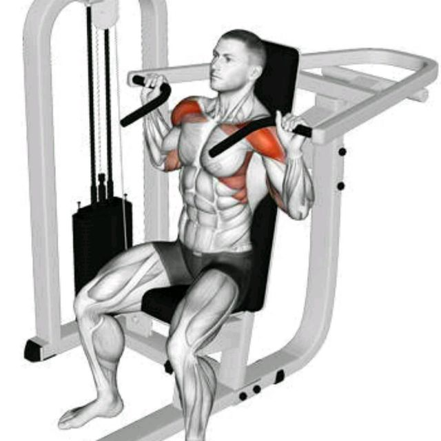

Shoulder Press Machine
Go to bottom
The shoulder press is an effective upper-body exercise that focuses on several key muscles, including the trapezius, deltoids, and triceps. It is a beneficial exercise suitable for individuals of all fitness levels, promoting strength development and enhancing posture. Additionally, regular shoulder press workouts can contribute to reducing the risk of osteoporosis, a condition characterized by decreased bone density. Whether you're a beginner or experienced in strength training, incorporating the shoulder press into your routine can have positive effects on your upper body strength, muscle tone, and overall bone health.

Benefits of the Shoulder Press
- Upper Body Muscle Development: The shoulder press primarily targets the deltoid muscles in the shoulders, along with the trapezius and triceps muscles. Regular shoulder press workouts can lead to increased strength, muscle definition, and overall development in these areas.
- Improved Posture: Strengthening the muscles of the shoulders and upper back through shoulder press exercises can help improve posture. Stronger muscles in this region support proper alignment and reduce the likelihood of rounded shoulders or slouching.
- Increased Upper Body Strength: The shoulder press is a compound exercise that engages multiple upper body muscles simultaneously. It promotes overall upper body strength and functional fitness, making everyday tasks and activities easier to perform.
- Enhanced Shoulder Stability: By targeting the deltoid muscles and other surrounding muscles, the shoulder press helps improve shoulder joint stability. This can be especially beneficial for individuals involved in sports or activities that require shoulder mobility and stability.
Muscles Targeted
- Deltoid Muscles: The deltoids, consisting of the anterior (front), medial (middle), and posterior (rear) heads, are the primary muscles targeted during the shoulder press. They are responsible for shoulder abduction and assist in shoulder flexion and extension.
- Trapezius: The trapezius muscles, located in the upper back and neck region, are engaged to stabilize the shoulders and assist in shoulder elevation during the shoulder press.
- Triceps Brachii: The triceps muscles, located on the back of the upper arm, are activated during the extension phase of the shoulder press movement.
- Serratus Anterior: The serratus anterior muscles, located along the sides of the ribcage, are involved in stabilizing the shoulder blades during the shoulder press exercise.
Back to Home